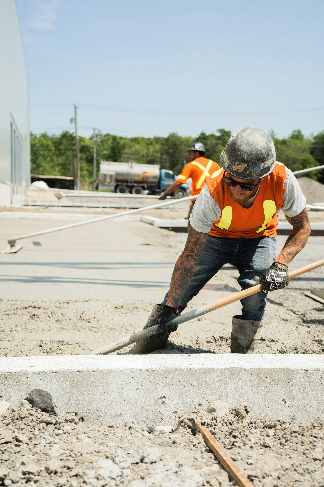
01
Driveways & Flatwork
New concrete driveways, walkways, sidewalks, and patios — poured, finished, and built for everyday load and curb appeal.
Concrete · Masonry · Hardscape · 20 Years
Urban Concrete and Construction is a VA Class A contractor with two decades of experience in every area of concrete work — from driveways, patios, and walkways to slabs, foundations, retaining walls, and decorative finishes across Northern Virginia and Montgomery County, MD.
Speak with Alex & the crew +1 703-626-1684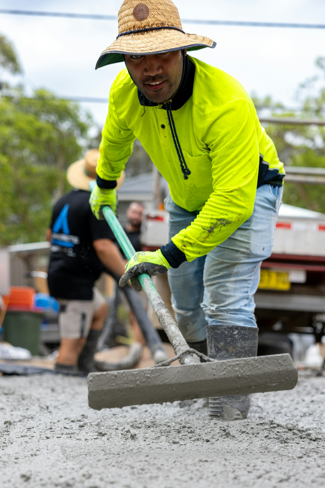
Craftsmanship in every pour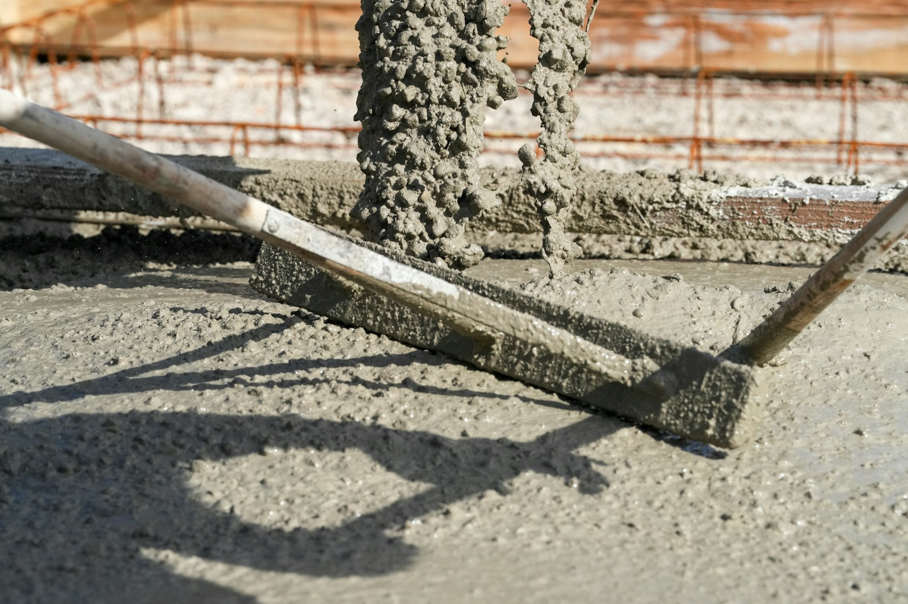
Why the details matter
Done right, concrete shapes how a property looks, drains, and holds up for years. The difference between a slab that lasts and one that fails comes down to the fundamentals — proper preparation, the right pour, and a clean, deliberate finish.
After 20 years, we don't just pour concrete — we build surfaces that hold up.
What we build
Residential and commercial concrete, masonry, and hardscape across Northern Virginia and Montgomery County — organized around the work our clients ask for most.

New concrete driveways, walkways, sidewalks, and patios — poured, finished, and built for everyday load and curb appeal.
Concrete patios, porches, and outdoor living surfaces designed to extend how you use your property.
Poured slabs, wall forms, and foundation work sized to the job — giving the rest of the structure something solid to stand on.
Structural and decorative retaining walls that hold back grade and shape usable outdoor space.
Decorative overlays, scoring, stamping, and staining for surfaces that need to perform and look the part.
Stucco application and block work to finish and strengthen walls, steps, and structures.
Crack repair, resurfacing, and rebuilding sinking steps and porches — a longtime Urban specialty.
Learn morePavers, flagstone, stone features, and rock work to complement your concrete and landscape.
Drainage solutions that move water away from foundations, patios, and low spots on your property.
Gravel, topsoil, sand, mulch, and compost delivered for your project or landscape.
Tell us about your property and we'll point you in the right direction.
Get a free estimateSelected projects
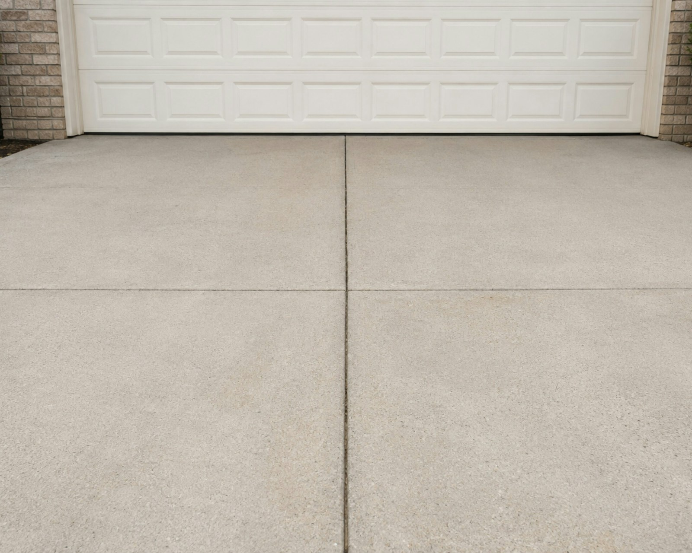
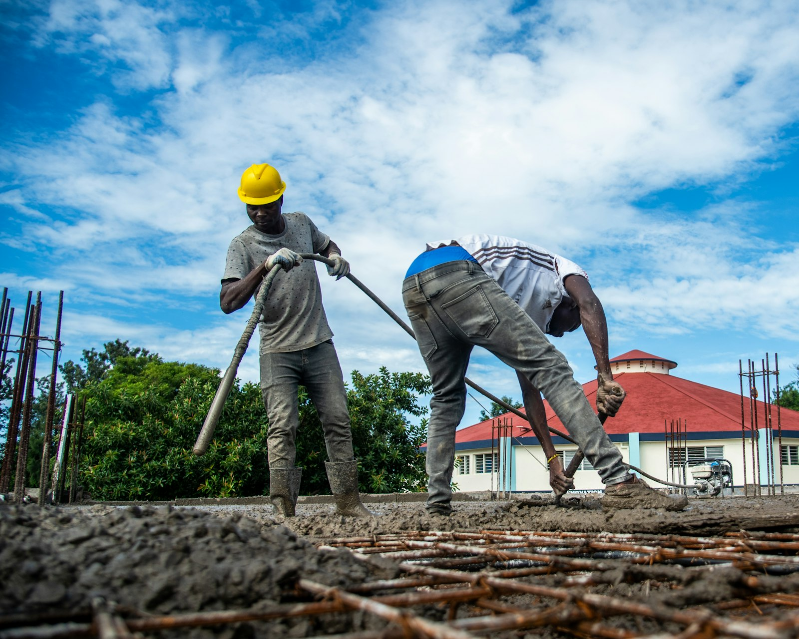
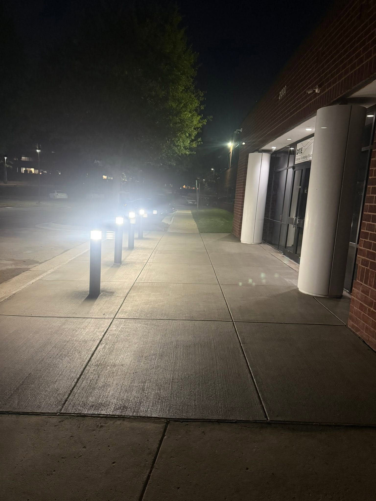
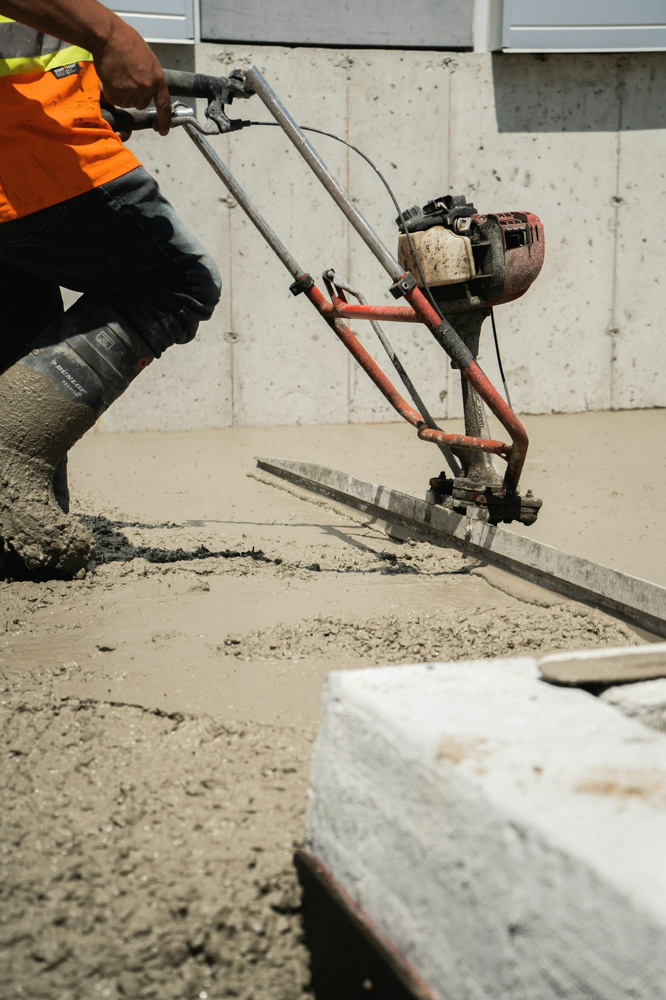
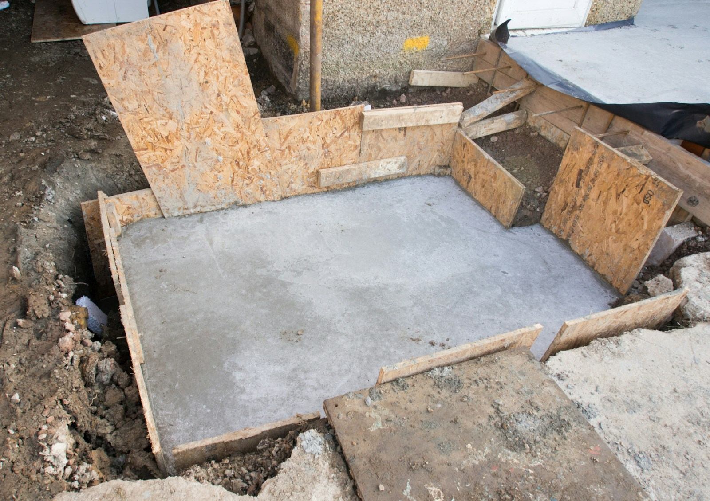
These tiles use placeholder construction photography. Swap the files in assets/img/ with real Urban Concrete project photos (keep the same filenames) and the gallery updates automatically.
Before & After
A settled, breaking walkway removed and rebuilt as a clean, level concrete surface. Drag the handle to compare the same spot before and after.
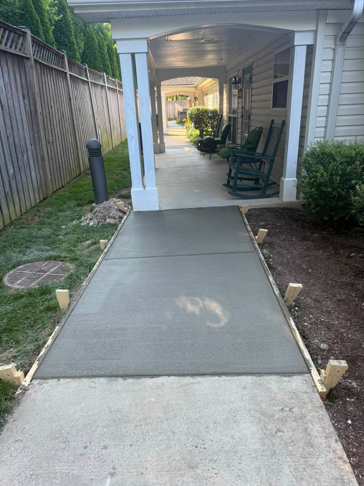
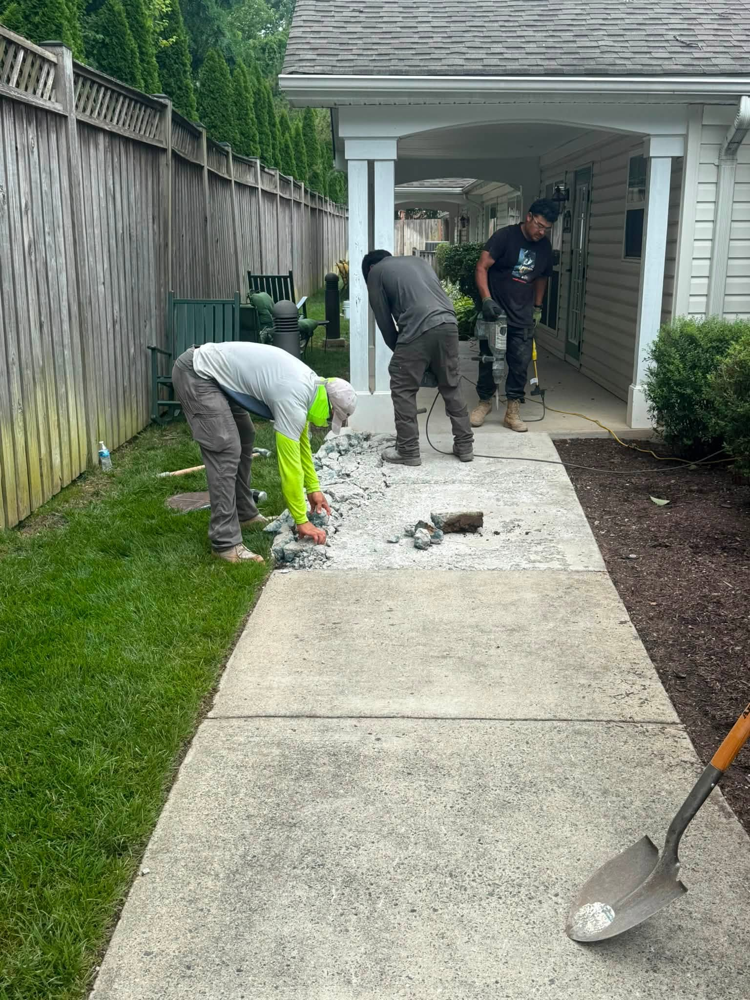
Before AfterConcrete Repair · Restoration
Cracked slabs, sinking steps, spalling surfaces, and settling porches rarely fix themselves — and they only get worse. With 20 years of restoration experience, Urban Concrete can assess the existing surface and rebuild it the right way, so you get years more life out of it.
Who we serve
For homeowners who want concrete that looks right and lasts.
For property managers and businesses that need dependable results.
Why Urban
Two decades in every area of concrete, masonry, and landscape materials — the know-how shows in the finish.
A VA Class A contractor, fully insured — the credentials that protect your property and your investment.
Led by master craftsman Alex Flores, with a focus on the surfaces you'll actually live and work on.
Straightforward pricing and dependable communication — leave a message anytime and we'll follow up.
How it works
Tell us what you need and where.
We assess the project and give you a free estimate.
Our crew completes the concrete work.
You get a finished surface built for everyday use.
Where we work
Based in Springfield, VA, Urban Concrete and Construction serves homeowners and commercial properties across Northern Virginia and Montgomery County, Maryland. Don't see your town? Reach out — we may still be able to help.
Check Availability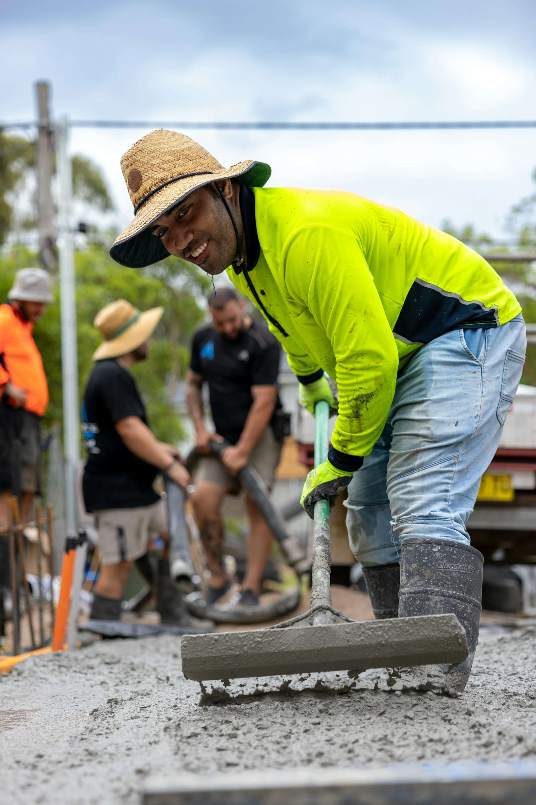
Placeholder — replace with Urban team photoAbout Urban
Urban Concrete and Construction LLC is a Northern Virginia contractor led by master craftsman Alex Flores, with 20 years of experience in all areas of concrete work and landscape materials. As a VA Class A licensed, insured contractor, we bring the credentials — and the craftsmanship — to every project.
From driveways, patios, and walkways to slabs, foundations, retaining walls, decorative finishes, and repairs, our goal is straightforward: deliver surfaces our clients are glad they invested in. Based at 6912 Rolling Road in Springfield, VA, we serve homeowners and businesses across Northern Virginia and Montgomery County, MD.
Let's build something that lasts
Whether you need a new concrete surface, a retaining wall, decorative work, repairs, or material delivery, contact Urban Concrete and Construction to discuss your project.
Get in touch
Tell us a little about your project and we'll follow up to talk details.